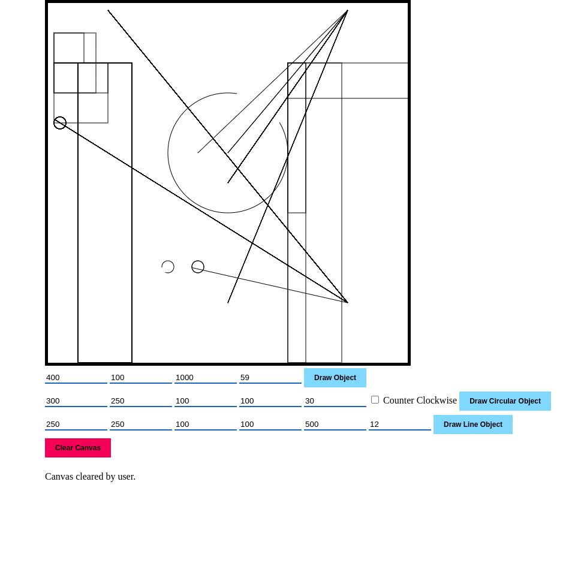

This is a basic web application developed in Niu Valley Middle School’s Computer Science Club. This club introduced me to basic website development, including the relationship between HTML, CSS and JavaScript files. I learned how to interact with the DOM through JavaScript in order to modify the content on the page, and how to add basic styles to the HTML code by attaching class names and IDs to the objects. This project was done individually, under the guidance of the club’s teacher.
The basic idea of how the website was developed is as follows:
index.html contains the content of the page, including the canvas, the inputs, and the buttons. All elements in this page include an identifier, so that they can be styled and the data contained in the inputs can be grabbed by index.js.index.js contains the logic for the page. Once a button is pressed, a function found in index.js is invoked and grabs the input from the DOM, using their unique identifiers, and the instructions are drawn on the canvas.style.css contains the page’s styling and includes transition animations.The current version of this program is quite inflexible, as it requires the user to type in the coordinates to draw on the canvas with a very limited set of shapes. If I were to do this project again today, this is what I would change:
This code is not maintained, and thus the demo is not guaranteed to work.